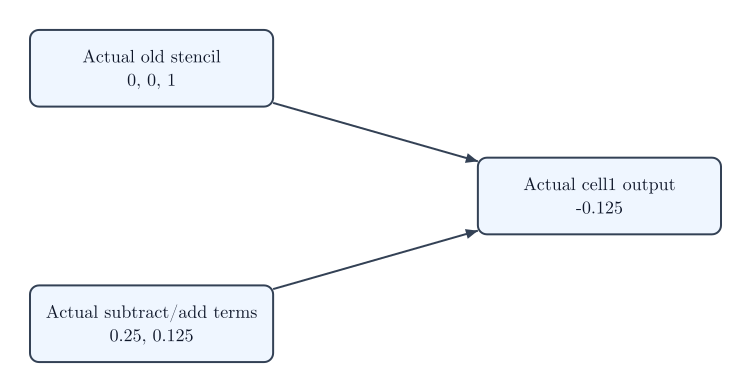
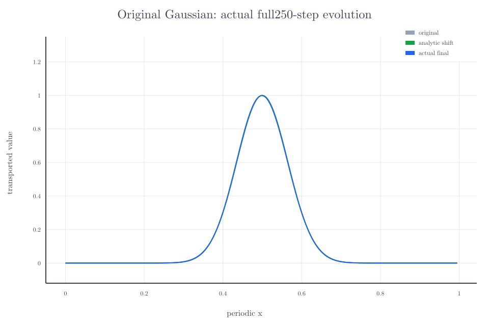
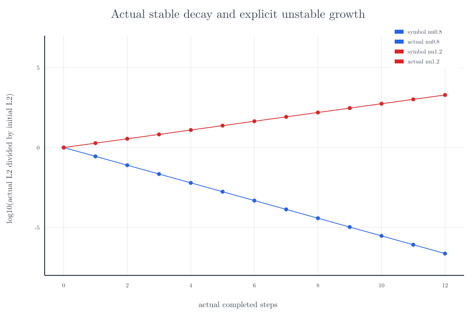
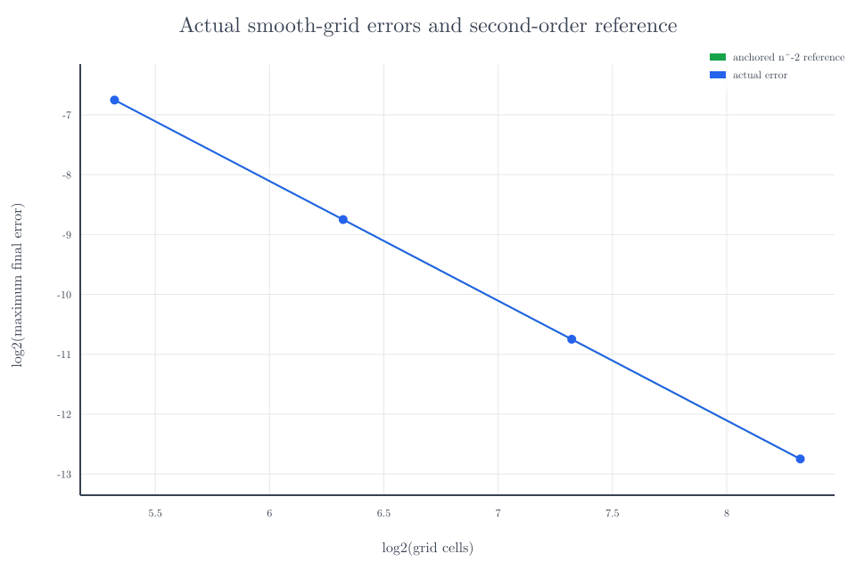

Periodic Lax–Wendroff advection
Abstract
A second-order centered transport update conserves periodic mass in exact arithmetic and is L2 stable under its Courant restriction. Those facts do not imply positivity or absence of ringing. We inspect the actual producing stencils, retain the original200-cell Gaussian experiment and compare actual Fourier-mode growth and smooth-grid refinement with their mathematical references.
From transport to the stencil
For u_t+a*u_x=0, Taylor expansion in time and u_tt=a^2*u_xx give
Indices wrap periodically. The first difference approximates transport, and the second comes from the time expansion rather than an arbitrary smoothing knob. Summing the periodic differences gives zero, hence exact-arithmetic mass conservation. The implementation uses separate old/new buffers; all displayed operands and results come from this producing execution.
One actual impulse update
Set nu=0.5 and initial values0,0,1,0,0. The new values include −0.125, immediately disproving positivity preservation despite the stable Courant value. Native records expose the exact contributing old values and both terms.
#include <dm/dm.hpp>
int main() {
std::filesystem::create_directories("build");
auto t = dm::algorithms::lax_wendroff_trace({0, 0, 1, 0, 0}, 1, 1, .5, 1);
std::print("| actual cell | actual left | actual center | actual right | subtractive term | additive " "term | actual new value |\n| ---: | ---: | ---: | ---: | ---: | ---: | ---: |\n");
for (const auto &c : t.cells)
std::print("| {} | {} | {} | {} | {} | {} | {} |\n", c.index, c.left,
c.center, c.right, c.advective_term, c.diffusive_term,
c.value);
std::print("\nActual mass {} to {}; actual L2 {} to {}.\n",
t.diagnostics.front().mass, t.diagnostics.back().mass,
t.diagnostics.front().l2_norm, t.diagnostics.back().l2_norm);
auto c = t.cells[1];
dm::graphics::Diagram d;
d.node("old", {0, 2},
std::format("Actual old stencil\n{}, {}, {}", c.left, c.center,
c.right)).node("terms", {0, -2},
std::format("Actual subtract/add terms\n{}, {}",
c.advective_term,
c.diffusive_term)).node(
"new", {7, 0}, std::format("Actual cell{} output\n{}", c.index, c.value)).edge("old", "new").edge("terms", "new").save_svg("build/lax_impulse.svg");
}| actual cell | actual left | actual center | actual right | subtractive term | additive term | actual new value |
|---|---|---|---|---|---|---|
| 0 | 0 | 0 | 0 | 0 | 0 | 0 |
| 1 | 0 | 0 | 1 | 0.25 | 0.125 | -0.125 |
| 2 | 0 | 1 | 0 | 0 | -0.25 | 0.75 |
| 3 | 1 | 0 | 0 | -0.25 | 0.125 | 0.375 |
| 4 | 0 | 0 | 0 | 0 | 0 | 0 |
Actual mass 1 to 1; actual L2 1 to 0.8477912478906585174.

Original200-cell Gaussian
Retain length1, speed1,200 cells, dx=1/200, dt=0.8*dx, initial exp(−120*(x−0.5)^2), and round(1/(a*dt))=250 steps. The analytic reference wraps x−a*t into[0,1), preserving the original periodic shift formula. Its tiny endpoint derivative mismatch means this Gaussian is not the smooth periodic refinement control used later. The trace performs one complete run and stores its original and every actual state, not repeated prefix runs.
#include <dm/dm.hpp>
int main() {
std::filesystem::create_directories("build");
const int n = 200;
const double dx = 1. / n, dt = .8 * dx;
const int steps = std::lround(1 / dt);
const double time = steps * dt;
auto exact = [](double x) {
x = std::fmod(x, 1.);
if (x < 0)
x += 1;
return std::exp(-120 * (x - .5) * (x - .5));
};
std::vector<double> x, u, truth;
for (int j = 0; j < n; ++j) {
x.push_back(j * dx);
u.push_back(exact(x.back()));
truth.push_back(exact(x.back() - time));
}
auto t = dm::algorithms::lax_wendroff_trace(u, 1, dx, dt, steps);
double error = 0;
for (int j = 0; j < n; ++j)
error = std::max(error, std::abs(t.analysis.values[j] - truth[j]));
std::print("| actual cells | actual steps | actual Courant | actual maximum error to shifted Gaussian | " "actual mass drift | actual final minimum | actual final maximum |\n| ---: | ---: | ---: | " "---: | ---: | ---: | ---: |\n| {} | {} | {} | {:.12g} | {:.12g} | {:.12g} | {:.12g} |\n",
n, steps, t.analysis.courant, error,
t.diagnostics.back().mass - t.diagnostics.front().mass,
t.diagnostics.back().minimum, t.diagnostics.back().maximum);
std::print("\nActual cell updates {}; selected stencil operands {}; captured logical entries {}.\n",
t.analysis.work.cell_updates, t.analysis.work.stencil_reads,
t.captured_entries);
auto p = dm::graphics::RPlot::create();
p.line(x, u, "original", {148, 163, 184}, 2).line(x, truth,
"analytic shift",
{22, 163, 74}, 2).line(
x, t.analysis.values, "actual final", {37, 99, 235}, 2).y_limits(
-.12, 1.35).title("Original Gaussian: actual full250-step evolution").x_label("periodic x").y_label("transported value").save_svg("build/lax_original.svg");
}| actual cells | actual steps | actual Courant | actual maximum error to shifted Gaussian | actual mass drift | actual final minimum | actual final maximum |
|---|---|---|---|---|---|---|
| 200 | 250 | 0.8 | 0.00770867355196 | -3.90312782095e-18 | 2.62750492287e-14 | 0.999005022035 |
Actual cell updates 50000; selected stencil operands 150000; captured logical entries 100451.

L2 stability and an explicit unstable control
For a Fourier mode exp(i*j*theta), the exact-arithmetic amplification factor is
Thus abs(nu)<=1 gives L2 stability, not an L-infinity maximum principle, positivity or monotonicity. At computed nu0 and plus/minus1, native exact copy paths avoid cancellation: identity or one-cell periodic shift. Default calls reject a Courant violation. The following explicit allow_unstable control intentionally permits nu1.2 to show growth of a32-cell alternating Nyquist mode; the stable nu0.8 control decays. The symbol is a theoretical reference, while every plotted norm comes from the actual stored states.
#include <dm/dm.hpp>
int main() {
std::filesystem::create_directories("build");
std::vector<double> u(32);
for (std::size_t j = 0; j < u.size(); ++j)
u[j] = j % 2 ? -1 : 1;
bool rejected = false;
try {
dm::algorithms::lax_wendroff_advection(u, 1, 1, 1.2, 1);
} catch (const std::invalid_argument &) {
rejected = true;
}
std::print("Default Courant1.2 rejected: {}.\n\n| actual Courant | actual step | actual L2 ratio | " "analytic absolute G power |\n| ---: | ---: | ---: | ---: |\n",
rejected);
auto p = dm::graphics::RPlot::create();
for (double nu : {.8, 1.2}) {
auto t = dm::algorithms::lax_wendroff_trace(u, 1, 1, nu, 12, true);
double g =
std::abs(dm::algorithms::lax_wendroff_amplification(nu,
std::numbers::pi));
std::vector<double> x, y, reference;
for (std::size_t k = 0; k < t.states.size(); ++k) {
double ratio = t.diagnostics[k].l2_norm / t.diagnostics[0].l2_norm;
std::print("| {} | {} | {:.12g} | {:.12g} |\n", nu, k, ratio,
std::pow(g, k));
x.push_back(k);
y.push_back(std::log10(ratio));
reference.push_back(std::log10(std::pow(g, k)));
}
auto color =
nu < 1 ? dm::graphics::RGB{37, 99, 235}
: dm::graphics::RGB{220, 38, 38};
p.line(x, reference, std::format("symbol nu{}", nu), color, 1.5).points(
x, y, std::format("actual nu{}", nu), color, 4);
}
p.y_limits(-8, 7).title("Actual stable decay and explicit unstable growth").x_label("actual completed steps").y_label("log10(actual L2 divided by initial L2)").save_svg("build/lax_fourier.svg");
}Default Courant1.2 rejected: true.
| actual Courant | actual step | actual L2 ratio | analytic absolute G power |
|---|---|---|---|
| 0.8 | 0 | 1 | 1 |
| 0.8 | 1 | 0.28 | 0.28 |
| 0.8 | 2 | 0.0784 | 0.0784 |
| 0.8 | 3 | 0.021952 | 0.021952 |
| 0.8 | 4 | 0.00614656 | 0.00614656 |
| 0.8 | 5 | 0.0017210368 | 0.0017210368 |
| 0.8 | 6 | 0.000481890304 | 0.000481890304 |
| 0.8 | 7 | 0.00013492928512 | 0.00013492928512 |
| 0.8 | 8 | 3.77801998336e-05 | 3.77801998336e-05 |
| 0.8 | 9 | 1.05784559534e-05 | 1.05784559534e-05 |
| 0.8 | 10 | 2.96196766695e-06 | 2.96196766695e-06 |
| 0.8 | 11 | 8.29350946747e-07 | 8.29350946747e-07 |
| 0.8 | 12 | 2.32218265089e-07 | 2.32218265089e-07 |
| 1.2 | 0 | 1 | 1 |
| 1.2 | 1 | 1.88 | 1.88 |
| 1.2 | 2 | 3.5344 | 3.5344 |
| 1.2 | 3 | 6.644672 | 6.644672 |
| 1.2 | 4 | 12.49198336 | 12.49198336 |
| 1.2 | 5 | 23.4849287168 | 23.4849287168 |
| 1.2 | 6 | 44.1516659876 | 44.1516659876 |
| 1.2 | 7 | 83.0051320567 | 83.0051320567 |
| 1.2 | 8 | 156.049648267 | 156.049648267 |
| 1.2 | 9 | 293.373338741 | 293.373338741 |
| 1.2 | 10 | 551.541876833 | 551.541876833 |
| 1.2 | 11 | 1036.89872845 | 1036.89872845 |
| 1.2 | 12 | 1949.36960948 | 1949.36960948 |

Smooth periodic refinement
Use sin(2*pi*x), CFL0.8 and n=40,80,160,320. Exactly5*n/4 complete updates reach time1 up to floating-point arithmetic. Each measured error compares the actual full final grid with the analytic sine at the actual time. Second-order consistency predicts O(dx2) at fixed final time for smooth data; measured pairwise orders are observations rather than a guarantee on arbitrary inputs. The plotted n-2 line is anchored at the first observed error and explicitly labelled as a reference.
#include <dm/dm.hpp>
int main() {
std::filesystem::create_directories("build");
std::vector<double> x, y, reference;
double previous = 0, first = 0;
std::print("| actual cells | actual steps | actual maximum sine error | observed pairwise order, first " "row0 sentinel | actual cell updates |\n| ---: | ---: | ---: | ---: | ---: |\n");
for (int n : {40, 80, 160, 320}) {
double dx = 1. / n, dt = .8 * dx;
int steps = 5 * n / 4;
std::vector<double> u(n);
for (int j = 0; j < n; ++j)
u[j] = std::sin(2 * std::numbers::pi * j * dx);
auto a = dm::algorithms::lax_wendroff_analyze(u, 1, dx, dt, steps);
double error = 0;
for (int j = 0; j < n; ++j)
error =
std::max(error,
std::abs(a.values[j] - std::sin(
2 * std::numbers::pi * (j * dx - steps * dt))));
std::print("| {} | {} | {:.12g} | {:.8f} | {} |\n", n, steps, error,
previous ? std::log2(previous / error) : 0,
a.work.cell_updates);
if (!first)
first = error;
previous = error;
x.push_back(std::log2(n));
y.push_back(std::log2(error));
reference.push_back(std::log2(first * std::pow(40. / n, 2)));
}
auto p = dm::graphics::RPlot::create();
p.line(x, reference, "anchored n^-2 reference", {22, 163, 74}, 1.5).line(
x, y, "actual error", {37, 99, 235}, 2).points(x, y, "", {37, 99, 235},
5).title(
"Actual smooth-grid errors and second-order reference").x_label(
"log2(grid cells)").y_label("log2(maximum final error)").save_svg(
"build/lax_refinement.svg");
}| actual cells | actual steps | actual maximum sine error | observed pairwise order, first row0 sentinel | actual cell updates |
|---|---|---|---|---|
| 40 | 50 | 0.00926787794612 | 0.00000000 | 2000 |
| 80 | 100 | 0.00232339035738 | 1.99600748 | 8000 |
| 160 | 200 | 0.000581239035358 | 1.99902806 | 32000 |
| 320 | 400 | 0.000145333923393 | 1.99976010 | 128000 |

Contracts and verification
Inputs must be finite and nonempty, speed finite, spacing positive finite, timestep nonnegative finite, and steps nonnegative. Full input, work geometry and CFL policy are checked before computation. Ordinary finite double operation order is retained; nonfinite intermediate arithmetic triggers a widened fallback whose finite double output is still checked. Explicit unstable mode can still throw on produced overflow. Count-only analysis avoids additional state diagnostics. Trace diagnostics use widened time, mass and L2 arithmetic and add measured observation work.
Complete capture admission counts n+1+steps*(2*n+1) logical entries before copies or updates: original values and diagnostic, then each new state, diagnostic and producing cell records. The million-entry default excludes record fields, capacities, final-result/runtime copies and bytes/RAM; zero disables only that optional cap. Captures own their inputs and every actual state. No prefix reruns reconstruct history.
Independent exact Fraction arithmetic verified100 advection studies and741
actual states, including their mass and L2 observations. Another1000 ordinary
nonunit-Courant trajectories matched the frozen outputs bitwise. Native tests
verify actual impulse stencils, exact copy paths, overflow fallback, full
guards/quotas, Fourier amplification and explicit unstable growth, the original
Gaussian and smooth sine refinement. The complete ten-report batch passed77
native CTest cases,39 directly instrumented ASan/UBSan cases,106
compiled/executed public examples,479/479 scoped definitions and ten
representative clangd hovers. All4 complete report programs executed and all4
native figures were visually reviewed. HTML/Markdown computed result and
identical source/build/export figure bytes passed verification. Repeatable
receipts are retained under build/mepml-conversion/batch-194-203/.
References
P. Lax and B. Wendroff(1960), Systems of Conservation Laws, Communications on Pure and Applied Mathematics13(2),217–237. The scalar periodic constant-speed scheme is the specific case examined here; no shock monotonicity or nonlinear convergence claim follows from the Fourier calculation.